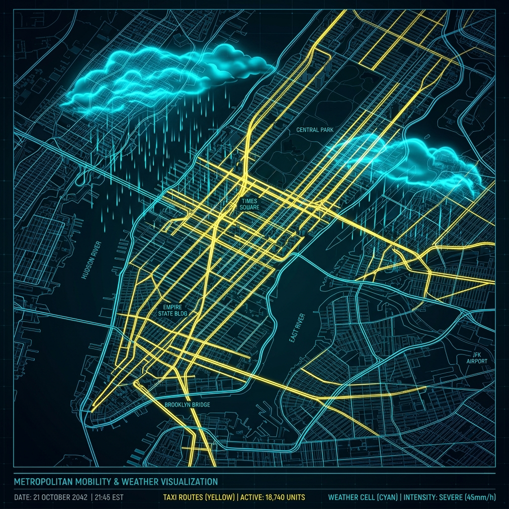
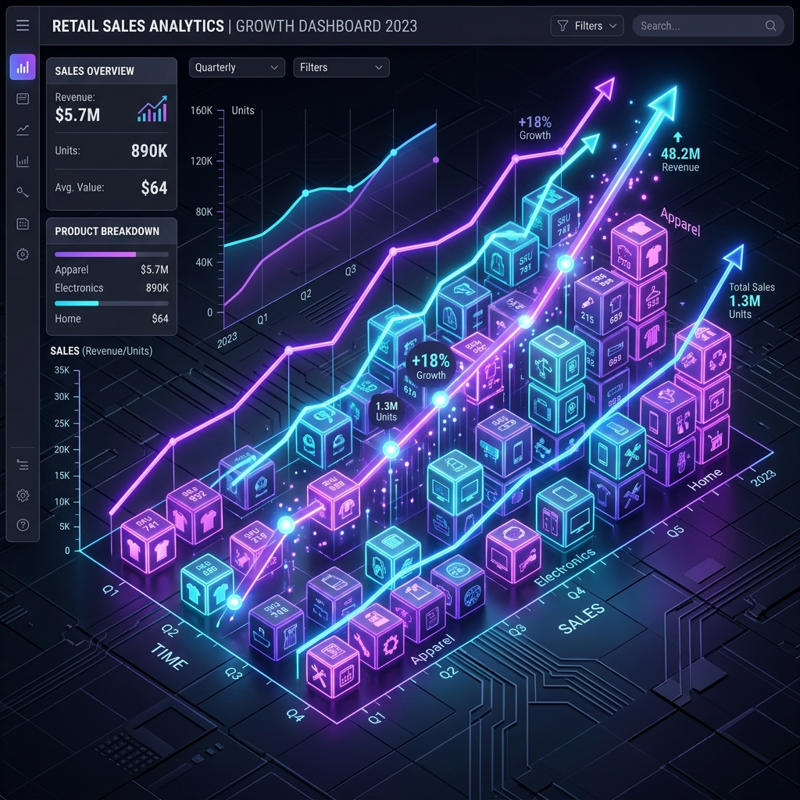
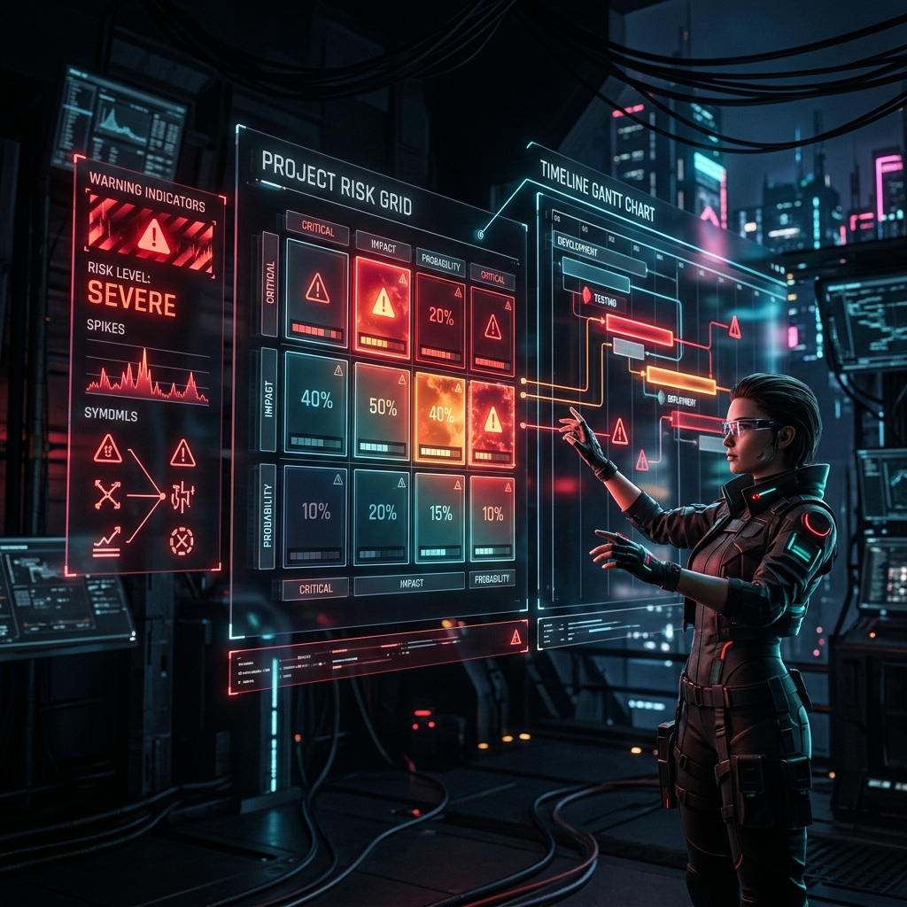

Tejasva Raje Deshmukh
Bridging the gap between complex big data pipelines and intelligent decision-making. Currently pursuing Master of Business Analytics and AI at UT Dallas.
About Me
I am a highly driven Data Engineer and AI Practitioner with a solid foundation in Computer Science and an ongoing specialization in Business Analytics and Artificial Intelligence at The University of Texas at Dallas.
My experience spans designing scalable ETL pipelines with 1,100+ daily runs, building validation frameworks, and crafting predictive models. I thrive at translating high-dimensional raw datasets into clear, actionable business strategies.
Analytics Excellence Scholarship
Awarded by UT Dallas for outstanding academic merit and potential in AI and data systems.
Master of Business Analytics & AI
The University of Texas at DallasSTEM-designated program focusing on advanced statistics, machine learning pipelines, cloud deployment, and business decision architectures.
Bachelor of Computer Science & Eng.
Vellore Institute of TechnologyAcquired core concepts in software engineering, database management systems, data structures, algorithms, and distributed computing.
Professional Experience
Data Engineer
LTIMindtree- Developed and automated large-scale data pipelines supporting over 1,100+ daily runs using SQL and Azure cloud, improving pipeline throughput and reliability.
- Designed and implemented custom validation frameworks and anomaly detection algorithms to identify system errors, ensuring high-quality, sanitized data streams for downstream AI models.
- Translated complex data structures into analytical insights, presenting outcomes to business stakeholders to drive data-informed decision cycles.
Data Analyst Intern
LTIMindtree- Reduced operational bottlenecks by design and execution of Fact and Dimension schemas utilizing SSIS and configuring Slowly Changing Dimensions (SCDs).
- Co-created interactive Power BI dashboards powered by SSAS semantic modeling and DAX queries, improving promotional strategies for corporate partners.
- Optimized enterprise workflows by streamlining SSMS integrations, ensuring end-to-end data governance and schema accuracy.
Academic Projects

NYC Yellow Taxi & Weather Correlation
Processed and analyzed over 1GB of raw taxi rides and meteorological data using a multi-node Hadoop cluster. Configured YARN scheduling and optimized Spark join operations across millions of rows to map taxi demand patterns during major weather shifts.
Explore Project
Retail Sales Analytics & Demand Modeling
Engineered 54 predictive features from 167K+ rows of retail transactions. Developed and cross-validated statistical regression models (OLS, Lasso, Ridge, Elastic Net) to identify key sales drivers and mitigate a historical 30% decline in sales.
Explore ProjectEnd-to-End Retail Sales Analysis
Modeled 9,765+ transactions across 69 SKUs to quantify price elasticity, promotion impacts, and competitive shelf positioning. Developed multiple regularized models (Lasso, Ridge) and an interactive Chart.js dashboard to deliver executive-level pricing recommendations.
Explore ProjectFlight Delay Prediction & Optimization
Developed a two-stage operational pipeline (delay classification → duration regression) on ~1M flight records. Structured leakage-free temporal/route features from pre-departure data to optimize airline resource allocation and passenger notification schemes.
Explore ProjectSecureAudit AI
Engineered a Model Context Protocol (MCP) server for local, privacy-preserving compliance audits. Built duplicated invoice identifiers, SOC2 RBAC anomaly detectors, and regex-based PII scrubbing filters linked to metadata-only webhook alert triggers.
Explore ProjectWorkflow Learning Agent (Fileflow)
Created an autonomous local workflow mining agent that monitors file system events. Employs FAISS vector memories to map activities, LLMs (Ollama) to formulate script execution plans, and a sandbox runner with step-by-step human approval gates.
Explore ProjectRecipe Recommendation RAG Assistant
Designed a chatbot pipeline that ingests, parses, and chunks recipe documents (PDF, DOCX, TXT) into ChromaDB. Integrates LangChain, conversation memory, OpenAI API, and semantic vector search to suggest custom recipes with full source attributions.
Explore Project
Pre-Mortem Failure Agent
Built a full-stack risk management app simulating potential project failures prior to kickoff. Tracks assumptions, task deadlines, and capacity overload to compute delay probability and scope creep metrics, presented via dynamic interactive charts.
Explore ProjectTechnical Arsenal
Languages & Core
Data & ML
AI & Large Language Models
Backend & APIs
Frontend & UI
Tools & Practices
Domain Exposure
AI & ML Workshops
AI4Students Workshop
October 2021Acquired fundamental knowledge of cloud-based artificial intelligence. Understood Microsoft Azure AI Services, Azure Machine Learning Studio, and workflows for deploying predictive cloud models.
View CertificateHow Google-DeepMind RL Works
July 2021Explored the mechanics of Reinforcement Learning loops, agent-environment dynamics, Q-learning algorithms, Policy Gradients, and Deep Q-Networks (DQNs) used in state-of-the-art decision models.
View CertificateNASA Deep Learning Auto-Colorization
August 2021Dived into Convolutional Neural Networks (CNNs), Autoencoders, and Generative Adversarial Networks (GANs) utilized by NASA to reconstruct and auto-colorize greyscale deep-space imagery.
View CertificateNetflix Recommendation Engines
July 2021Studied recommendation system paradigms including collaborative filtering, matrix factorization, content-based matching algorithms, and real-time streaming pipelines driving user engagement.
View CertificateHow Uber Saves Your Time
August 2021Explored large-scale routing architectures, network graphs, spatial indexing, dynamic pricing structures, and real-time supply-demand prediction queues optimized for urban mobility.
View CertificateInstagram Facial Filters Mechanics
August 2021Understood real-time computer vision pipelines, including Haar Cascades, dlib landmark keypoint tracking, and affine coordinate transformations for applying responsive 3D face mesh filters.
View CertificateAmazon Route Optimization
August 2021Investigated solutions to the Traveling Salesperson Problem (TSP) utilizing Genetic Algorithms (GA) with custom crossover, mutation, and selection operators for optimizing logistics grids.
View CertificateCertifications & Credentials
OCI Data Science Professional
Oracle | Oct 2025
OCI 2025 GenAI Professional
Oracle | Nov 2025
Certified Agentforce Specialist
Salesforce | Nov 2025
Big Data Analytics
University of California
Applied Data Science Externship
SmartInternz & IBM | May 2022
Food Demand Forecasting
SmartBridge & IBM | Aug 2022
Data Management & Viz
Wesleyan University | Dec 2021
Tableau DataViz Bootcamp
SmartBridge & Tableau | Jul 2021
Data Analytics Fundamentals
NASSCOM & Analyttica | Oct 2022
Agile Training Module
IBM Developer Skills Network | Aug 2022
Design Thinking
IBM Developer Skills Network | Aug 2022
DevOps Fundamentals
IBM Developer Skills Network | Aug 2022
Outstanding Performer - ISP 23
Internshala Ambassador | Aug 2021
Get In Touch
Let's Collaborate
Interested in optimizing data pipelines, building analytical models, or discussing research on generative AI frameworks? Drop a message.
dal869655@utdallas.edu
linkedin.com/in/tejasva-deshmukh
Location
Dallas, Texas, 75252